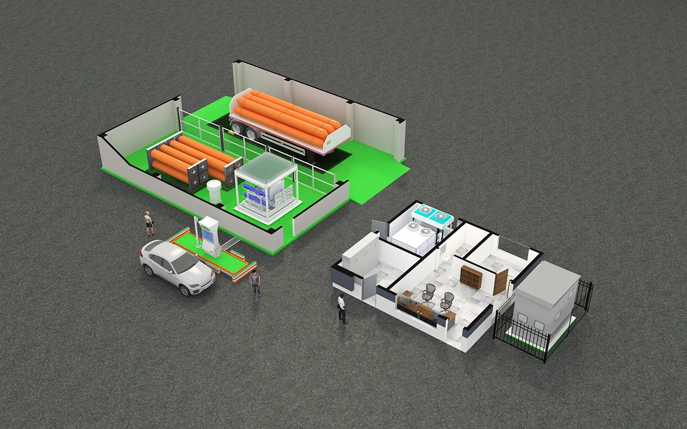

프로젝트 소개
수소 충전소를 단순화된 일러스트 형태로 표현한 기획 제안용 아이소메트릭 작업 사례를 소개드립니다.
분양조감도, 마스터플랜, 경관계획도와는 달리,
보다 가볍고 직관적인 ‘설명용 일러스트’가 필요한 경우에 활용되는 이미지 스타일로,
특히 프레젠테이션, 보고서, 제안서 등에 많이 쓰이고 있습니다.
프로젝트 개요
수소를 충전하는 차량과 이용자, 수소를 공급하는 배달 차량, 충전 시설, 관리 사무소, 변전소 등 주요 요소들을 상세하게 묘사하였습니다.
지붕은 생략하여 내부 구조가 한눈에 보이도록 구성하였으며,
기획안이나 제안서에 활용할 수 있도록 직관적이고 설명에 적합한 아이소메트릭 스타일의 이미지로 제작하였습니다.
프로젝트의 진행과정

배경이 투명한 버전도 별도로 제작하여 다양한 보고서, 인쇄물, 프레젠테이션 등에 바로 적용 가능
웹사이트, 영상, 슬라이드 등 여러 콘텐츠에서 유연하게 활용할 수 있는 포맷으로 납품했습니다.
결과물

사람, 차량, 설비, 구조물 등이 조화롭게 배치되어
충전소의 운영 구조와 시설 구성 개념이 명확히 전달되는 이미지로 제작되었습니다.
마치며
이번 프로젝트는 대규모 건축 조감도와는 다른 성격의 작업이었지만,
설명과 기획 제안 목적에 최적화된 시각 자료로서 높은 만족도를 얻을 수 있었습니다.
메이크그룹은 단순한 일러스트부터 고퀄리티 렌더링까지
다양한 스타일의 시각 콘텐츠를 제작하고 있으며,
특히 기획서/제안서/보고용 도식 이미지 제작 가능하니 편안하게 문의해주시면 감사하겠습니다.
CONTACT
TEL : 070-4127-5640